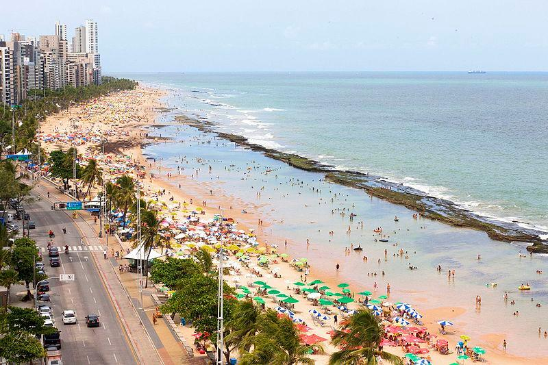

1. Marco Zero
O Marco Zero é um famoso ponto turístico localizado no Recife, Pernambuco, Brasil. Este marco simbólico representa o início de uma importante referência geográfica para o país: o Marco Zero do Recife.

2. Praia de Boa Viagem
A Praia de Boa Viagem é uma das praias mais conhecidas de Recife. Ela é famosa por sua extensa faixa de areia, coqueiros e mar azul. É um ótimo lugar para relaxar e aproveitar o sol.
3. Instituto Ricardo Brennand
O Instituto Ricardo Brennand é um complexo cultural que abriga uma coleção impressionante de arte e armamentos históricos. É um lugar fascinante para os amantes da arte e da história.